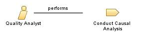

| Role: Quality Analyst (044034) |
 |
|
Relationships
 |
||
| Additionally Performs | ||
|---|---|---|
| Modifies |
|
|
Main Description
This role works with manufacturing technicians to analyze defect data in order to identify root causes and implement action plans to prevent future defects and to produce 'best in class' quality work |
Staffing
| Skills |
|
|---|
More Information
| Supporting Materials |
|---|
| © Copyright IBM Corp. 1987, 2012 All Rights Reserved Property of IBM These materials are intended only for use as part of an IBM engagement |